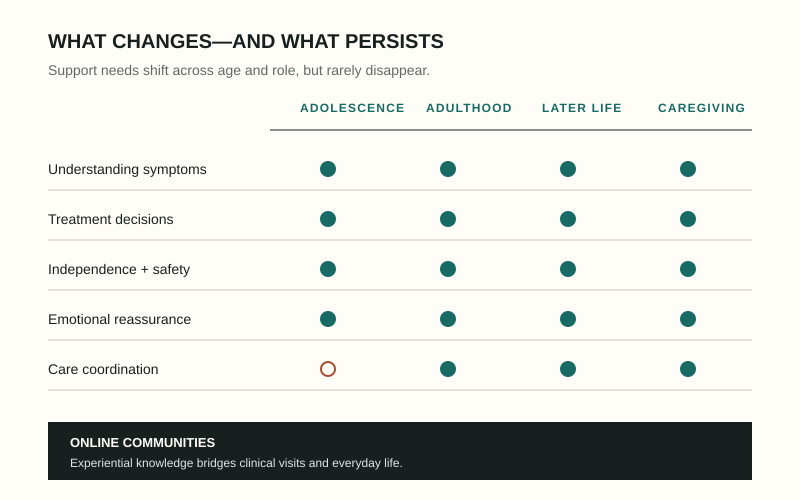

Online support across the life course
Understanding what people ask when clinical information is not enough
Using large-scale analysis and close qualitative reading of epilepsy communities, I examine how adolescents, adults, older adults, and caregivers share experiential knowledge, interpret seizures, and negotiate safety, autonomy, and support.
Topic modeling · Thematic analysis · Psycholinguistic analysis
Explore this research →